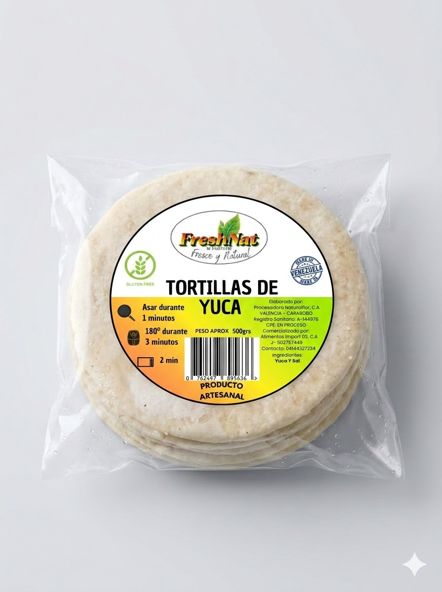

Tortilla Tradicional
Elaboradas únicamente con yuca seleccionada y un toque de sal. Gracias a nuestro proceso artesanal, logramos una textura increíblemente flexible que no se rompe al enrollar.
Beneficio: La base perfecta para tus tacos o wraps, con la flexibilidad que buscas y sin harinas añadidas.